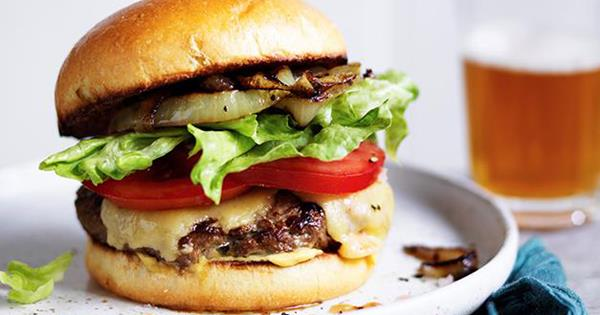

Home
Smash Burger

A easy choice
Sink your teeth into a delicious restaurant-style, hamburger recipe made from lean beef. Skip the prepackaged patties and take the extra time to craft up your own, and that little extra effort will be worth it. To make cheeseburgers, about 1 minute before burgers are done, top with sliced cheese; continue cooking until cheese begins to melt.
Ingredients:
- 1/2 80/20 IB Ground Chuck
- Salt
- Ground Peppercorn
- Onion Powder
- Brioche Bun
Instructions:
- Add oil to a 12-inch stainless steel, carbon steel, or cast iron skillet and wipe around with a paper towel. Set skillet over medium heat and allow to preheat for about 5 minutes. Meanwhile, gently form each portion of ground beef into a cylindrical puck about 2 inches tall, pressing together just until meat holds its shape without falling apart. Season generously on all sides with salt and pepper.
- Increase heat under skillet to high and heat until skillet is smoking. Add 2 beef pucks to skillet and, using a firm, stiff metal spatula, press down on each one until they're roughly 4 to 4 1/2 inches in diameter and 1/2-inch thick. It helps to use a second spatula to apply downward pressure to the first if you are having trouble smashing them hard enough.
- Cook without moving until a golden brown crust develops, about 1 1/2 minutes. Use the edge of the spatula to carefully scrape up and flip the patties one at a time, making sure to get all browned bits removed from the skillet. If using cheese, add now.
- Continue to cook until patties are cooked to desired doneness—about 30 seconds longer for medium-rare. Transfer patties to toasted buns, topping buns and/or patties as desired, close burgers, and serve immediately. Wipe out skillet with paper towel and repeat process with remaining ground beef pucks